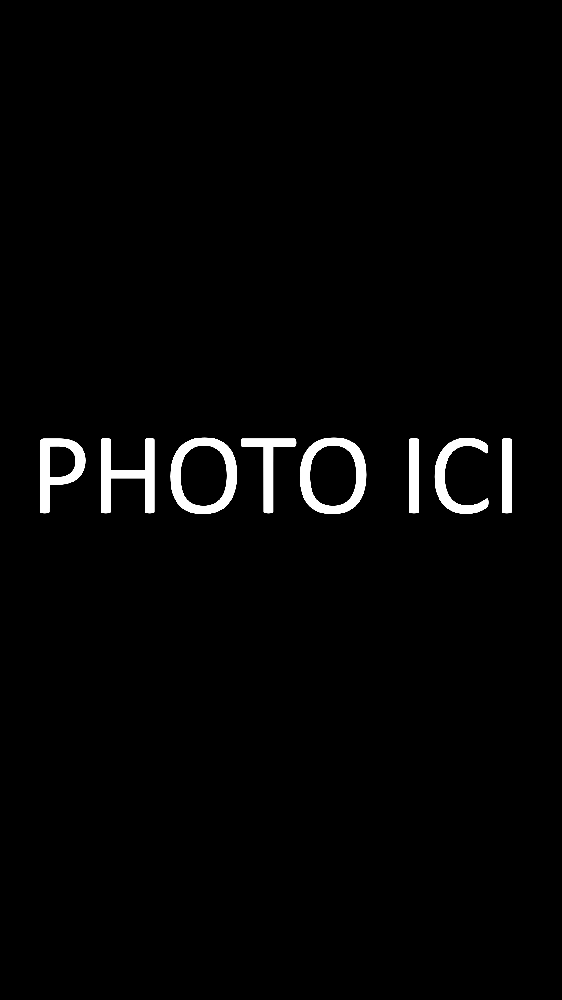

Qui suis-je?
Je suis sur la fin de deuxième année de mon BTS services informatiques aux organisations option solution logicielle application métiers. Après cela je souhaite intégré une licence professionnelle en programmation. Et si possible après , finir sur un master. Pour pouvoir me spécialisé et être le plus compétant possible dans mon domaine.
-----------------------
Télécharger mon cv>Informations de contact
Nom : BOURGEOIS Clément
-----------------------
Adresse : 1 rue Marcel Proust - 60200 Compiègne
Téléphone : 06 15 82 67 89
Permis B